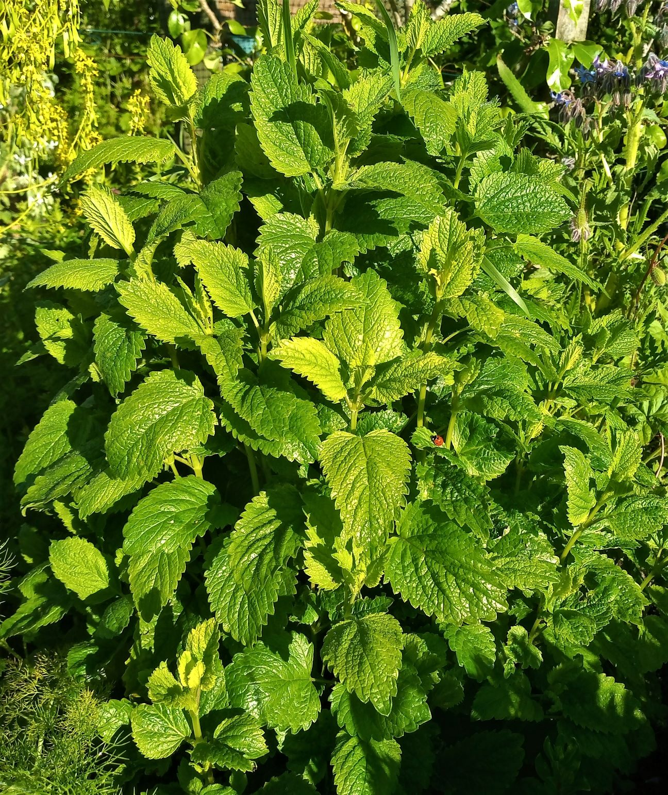

Melissa officinalis
| common name | lemon balm, bee balm, melissa | |
| en español | melisa, toronjil | |
| plant family | Lamiaceae (mint) | |
| parts used | fresh and dried leaves |
 from Wikimedia Commons By Amitchell125 - Own work, CC BY-SA 4.0
{kind=link}
observations/description
dried leaves
- rich light green color, some browning
- aromatic, low notes, grounding
"Lemon balm", Wikipedia
- heart-shaped leaves with a rough, veined surface
- leaves are soft and hairy with scalloped edges, and have a mild lemon scent
- small white or pale pink flowers appear during summer
distribution/conservation status
"Lemon balm", Wikipedia
- native to south-central Europe, the Mediterranean Basin, Central Asia and Iran
- naturalized in the Americas and elsewhere around the world
- grows easily from seed, preferring rich, moist soil
primary actions
The Yoga of Herbs, p. 206
- diaphoretic, carminative, nervine
The Modern Herbal Dispensatory, p. 259-60
- antiseptic, anti-thyrotropic, antiviral, aromatic, carminative, diaphoretic, nervine
notes from class, 3 Nov 2024
- nervine, sedative, anxiolytic, antiseptic, antiviral, antimicrobial, carminative, antispasmodic, diaphoretic, analgesic, anti-inflammatory
Spiritual Herbalism, p.158-9
- diuretic, calming, emmenagogue, antidepressant, nervine, antimicrobial, antiviral, nutritive, thyroid balancer, tonic
notes from class, 27 May 2025
- analgesic, antidepressant (stimulant), antimicrobial, antiviral, antispasmodic, carminative, nervine, anxiolytic
The New Age Herbalist, p. 68
- nervine, anxiolytic, aromatic, carminative, antispasmodic, emmenagogue, diaphoretic, antiviral
system affinities
nervous, digestive
primary uses
The Modern Herbal Dispensatory, p. 259-60
- mild astringent action
- useful for acute ailments: colds, flu, digestive upset
- with bugleweed, calms overactive thyroid
- helpful for nervousness affecting heart or digestion
- topical antiviral (e.g., cold sores, shingles)
- helps ease depression, calm mania, enhance sleep, aid memory/concentration
notes from class, 3 Nov 2024
- analgesic for headaches
- lifts mood
- topically for cold sores, herpes
The New Age Herbalist, p. 68
- used to treat colds, flu, depression, headache, indigestion
- 'makes the heart merry' according to Avicenna; recommended for nervousness, depression, insomnia, nervous headaches
- infusion is excellent after meals to aid digestion and relieve flatulence and colic
- essential oil has antihistaminic effect can be used topically for eczema
- promotes menstrual periods and eases period pains
- antiviral properties, good for treating mumps and cold sores
Spiritual Herbalism, p. 158-9
- use for upset stomach, ADD, stress, anxiety, tension, stress headaches, bipolar disorder, postpartum blues
- promotes focus, calming, centering
- good for fevers and has strong antiviral properties, especially for herpes simplex
notes from class, 27 May 2025
- good for digestive issues related to the nervous system
- gladdening herb, uplifts the mood, helps people laugh
- anxiety, mild depression, seasonal affective disorder, heart palpitations, panic, digestive issues linked with stress/anxiety/depression
- light diaphoretic, good for fevers linked to nervous system or digestive issues
energetics
Spiritual Herbalism, p. 158-9
- pungent, sweet, cool
The Yoga of Herbs, p. 206
- reduces kapha, pitta; vāta neutral
- pungent/sweet taste – pungent post-digestive effect
- cooling
The Modern Herbal Dispensatory, p. 259-60
- warming
notes from class, 27 May 2025
- sweet, sour
- cooling, slightly drying
pharmacology
The New Age Herbalist, p. 68
- volatile oils (up to 0.2%)
- citral, citronellal, eugenol acetate, geraniol
- polyphenols, tannins, flavonoids, rosmarinic acid, triterpenoids
notes from class, 3 Nov 2024
- volatile oils, rosmarinic acid, terpenes, tannins, flavonoids
Spiritual Herbalism, p. 158-9
- citrol, bitter principle, tannins, acids, flavonoids
contraindications/pharmaceutical interactions/warnings
Spiritual Herbalism, p. 158-9
- do not use during late stages of glaucoma, as it can raise ocular pressure
The Modern Herbal Dispensatory, p. 259-60
- no known contraindications
notes from class, 3 Nov 2024
- thyroid medications, central nervous system depressants
notes from class, 27 May 2025
- can use with hyperthyroidism but contraindicated for hypothyroidism/Hashimoto’s
- can interact with thyroid medications
preparations
The Modern Herbal Dispensatory, p. 259-60
- weak infusion
- dried leaf, 15 g: 1 L
- cold infusion
- dried leaf, 15 g: 1 L
- tincture
- fresh leaf, 1:2, 85% alcohol, 10% glycerin
- dried leaf, 1:5, 65% alcohol, 10% glycerin
- glycerite
- fresh leaf, 1:6, 80% glycerin, sealed simmer method
- dried leaf, 1:6
Herbal Materia Medica, p. 26
- standard infusion
- dried leaf, 1:32
dosage
The Modern Herbal Dispensatory, p. 259-60
- weak/cold infusion: 4-8 oz, 1-4/day or as desired
- tincture: 2-5 mL, 3/day
- glycerite: 2.5-10 mL, 3/day
Herbal Materia Medica, p. 26
- standard infusion: as needed
extra information
The Modern Herbal Dispensatory, p. 68
- used in Medieval cordials
notes from class, 3 Nov 2024
- genus name Melissa comes from the Greek for 'bees'; bees highly attracted to the plant
- hairy root system – highly adaptable to various climates
- grows 'aggressively' but not 'invasively'
Spiritual Herbalism, p.158-9
- revered as an elixir of life
- physicians of old believed it chases away melancholy
personal experiences/simples
tisane (1 tsp: 8 oz, 5-10 minutes), dried leaf
- very pleasant, but almost neutral, feels like a canvas
- felt a soothing, mellowing effect
- can hold up to higher herb:water ratio or longer steep
macerate (1 tbsp: 8 oz, 6 hours), dried leaf
- sweeter tasting than the hot infusion
- flavor is reminiscent of iced black tea with lemon and honey
- with a longer steep/more herb, i felt an immediate brightening effect: i felt more at ease, more good-humored, almost bemused
glycerite (1:6, 66.7% glycerin, 3 weeks), dried leaf
- deep yellowish/golden brown color
- beautiful, sweet aroma
- beautiful, sweet flavor
- lemon balm at its most delicious; the natural honey flavor blends with the sweetness of the glycerin
- occasionally i find lemon balm can have some peppery/capsicum notes that can be distracting; none here, but the earthiness from that flavor profile is present, very deepening
- between this and the cold water infusion, i believe lemon balm does best in maceration; interested to see what a tincture would taste like
- feel a clearing in my head
tincture (1:5, 65% alcohol, 10% glycerin, 2 weeks), dried leaf
- deep yellowish/golden brown color
- aroma has the sharp edge of alcohol but pleasant, familiar notes underneath
- very sweet and warming, the glycerin is a great addition
- pepper/capsicum notes are there alongside the lemon and iced tea flavors, but pleasant/playing a supporting role, not so distracting
- temptation to have more
- mood has brightened, body feels more inhabited; can see this working well in aphrodisiac formulations
- want to try a fresh plant tincture
witchcraft
Spiritual Herbalism, p. 158-9
- offer to Oshun and Yemaya
- 'sweet like a bath from the Mother, an ocean bath, cleaning and renewing with gentleness'
- brew infusion under the light of the full moon to connect to lunar/water energy
- brew outdoors overnight and drink in the morning while recalling/retelling dreams
- planetary influences: moon, water
notes from class, 3 Nov 2024
- plant around the home to draw in health and wellbeing
- broken heart spells
- smudge/smoke work
The Witch's Encyclopedia of Magical Plants, p. 187-8
- reputedly one of the mints consumed by the oracle priestesses at Delphi
- used in amulets in the middle ages in France and Germany to make a person friendly
- elements: air, water
- astrological influence: cancer, jupiter, moon
personal experience
- lowers the defenses, cuts through the irony that we are trained to hear into everything, the fear that anything may not be what it seems
- it can make funny things funnier: it eases our constant state of psychic tension that makes us extremely hostile to and suspicious of the world, uncomfortable with laughter and vulnerability
- on a deep level, society makes us afraid of one another and the world; societies need an Other and we feel at constant risk of becoming othered; this herb can return us to the unconditional (though, perhaps not unilaterally loving or benefic) embrace of Nature
- sweetens, makes the medicine go down easier
- allows for the clear realization of possibly hard truths/emotions that otherwise are not directly experienced, only glanced at through anxiety and endless posturing
recipes
sources
Easely, Thomas and Steven Horne. The Modern Herbal Dispensatory (2016)
Frawley, David and Vasant Lad. The Yoga of Herbs: An Ayurvedic Guide to Herbal Medicine (1986)
Goldberg Blackthorn, Samantha, Liza Feldkamp, and Shona MacDougall. Ace of Cups Herbal Medicine and Botanical Magic Herbal School (2024)
"Lemon balm" on Wikipedia. Retrieved 6 May 2025.
Kynes, Sandra. The Witch's Encyclopedia of Magical Plants (2024)
Mabey, Richard et al. The New Age Herbalist (1988)
Moore, Michael. Herbal Materia Medica, Fifth Edition (1995)
Rose, Karen M. The Art & Practice of Spiritual Herbalism (2022)